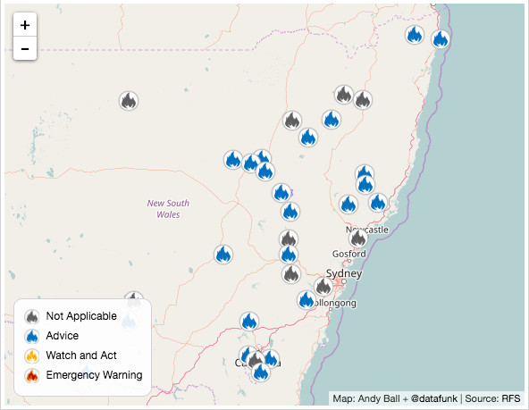

inspiration #1
Strava is the Swedish word for "strive", which epitomizes who we are and what we do: If you’re striving to improve, no matter your goals or ability, you’re one of us.
strava.com/about
"There are two eras of endurance sport history: before segments, and after segments"
inspiration #2
by the ABC and Small Multiples
"This Fact File, […] is one of the first using geographical areas to reveal how the patterns of homelessness have changed" over time.
#3
A story that cried out to be quantified as numbers told its story of demise more than anything.
Map of realtime bushfire incidents across New South Wales and Victoria designed to be embedded into Fairfax news articles.
